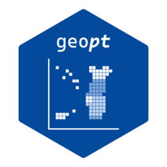

Skip to contents
geopt
0.1.0
Get started
Guides
Map compositions
Joining custom data
Health geographies
Boundary vintages and older data
Downloading official data
Under the hood
How the bundled data is built
How name matching works
Reference
Changelog

Articles
Guides
Map compositions
Joining data
Health geographies
Boundary vintages and older data
Downloading official data
Under the hood
How the bundled data is built
How name matching works